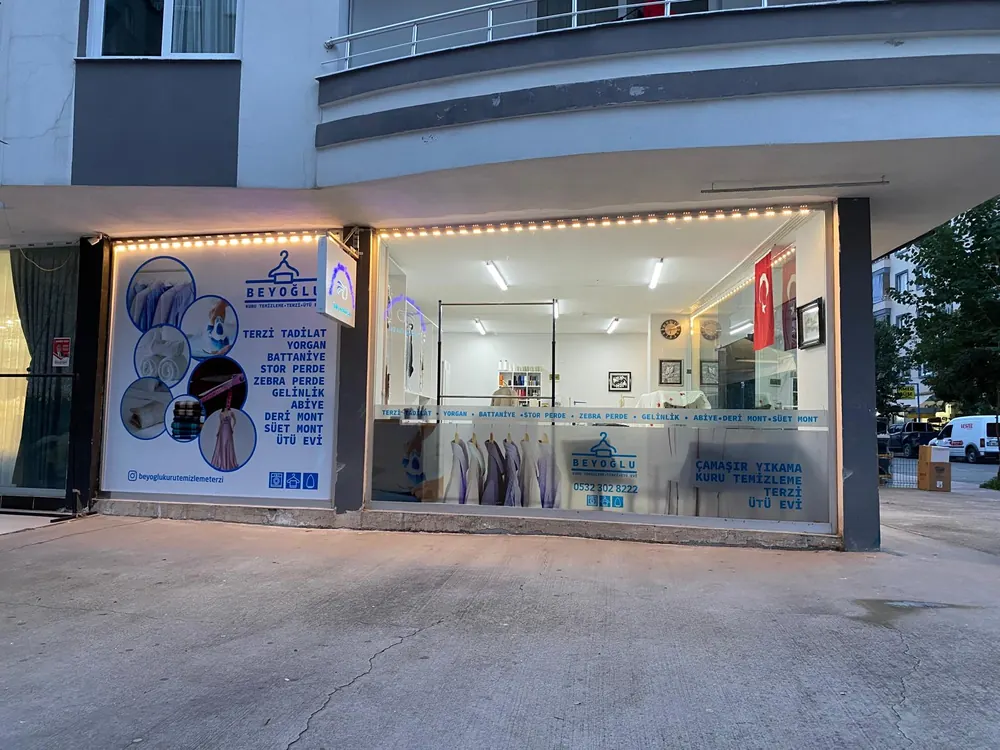
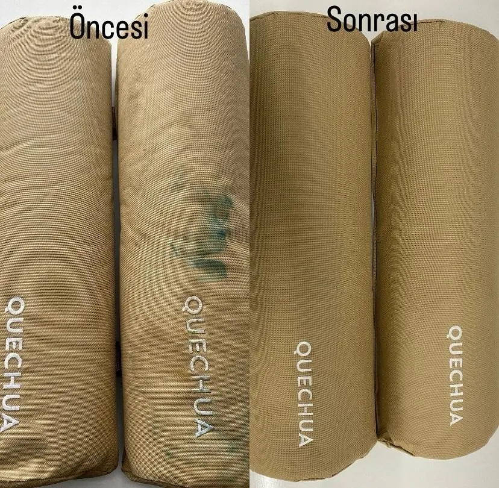
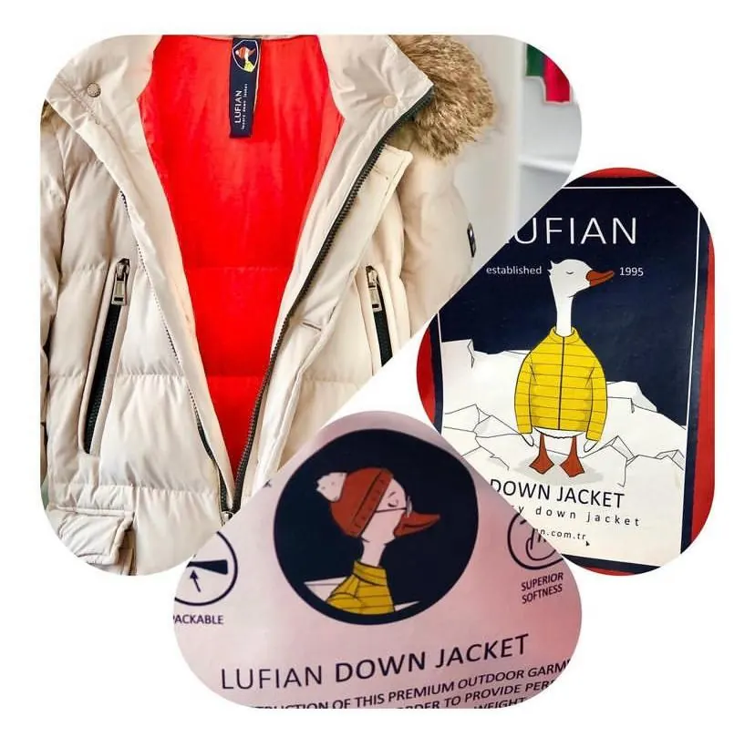
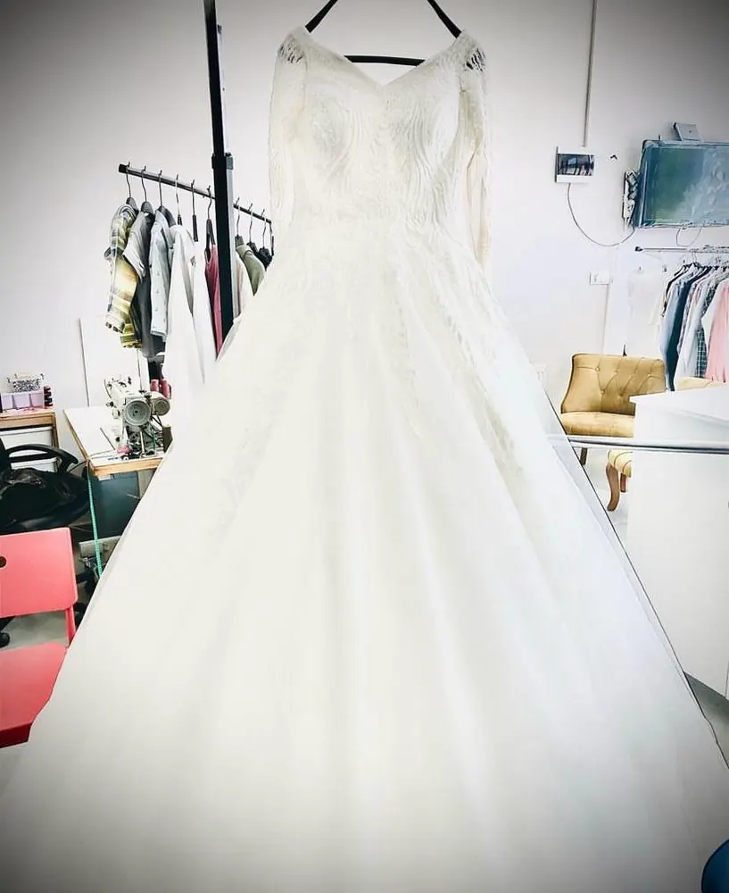
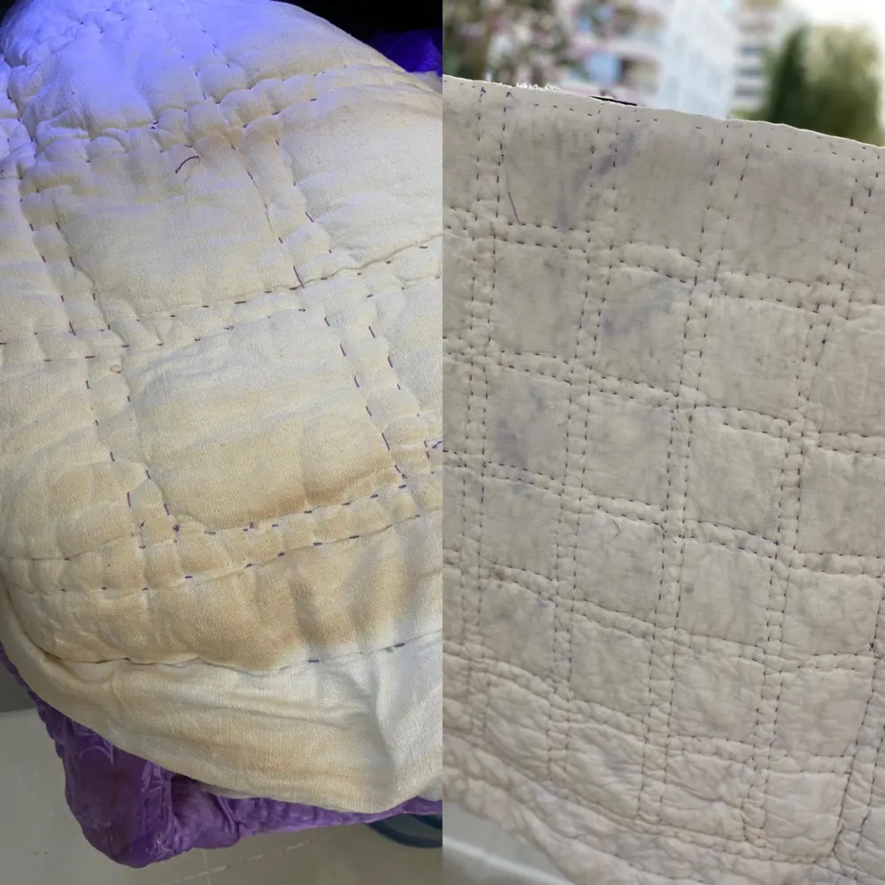
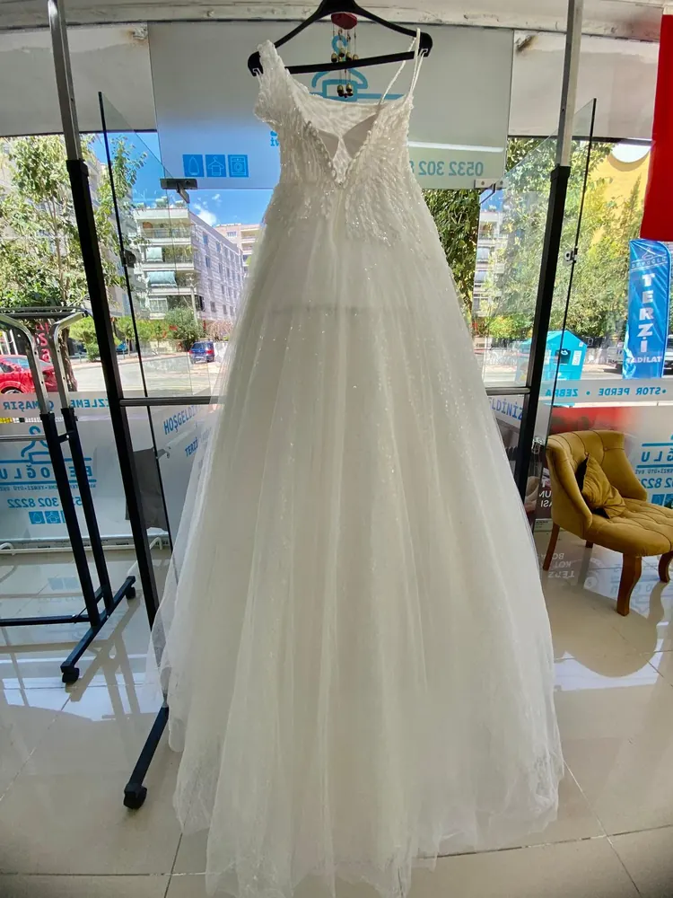
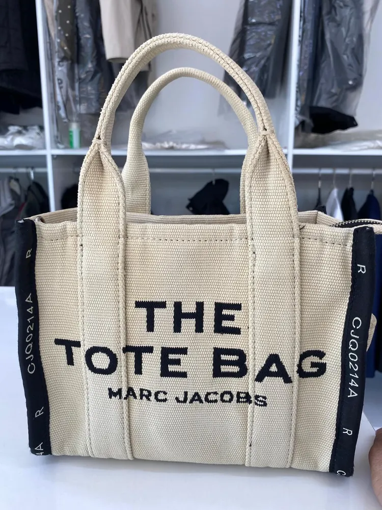
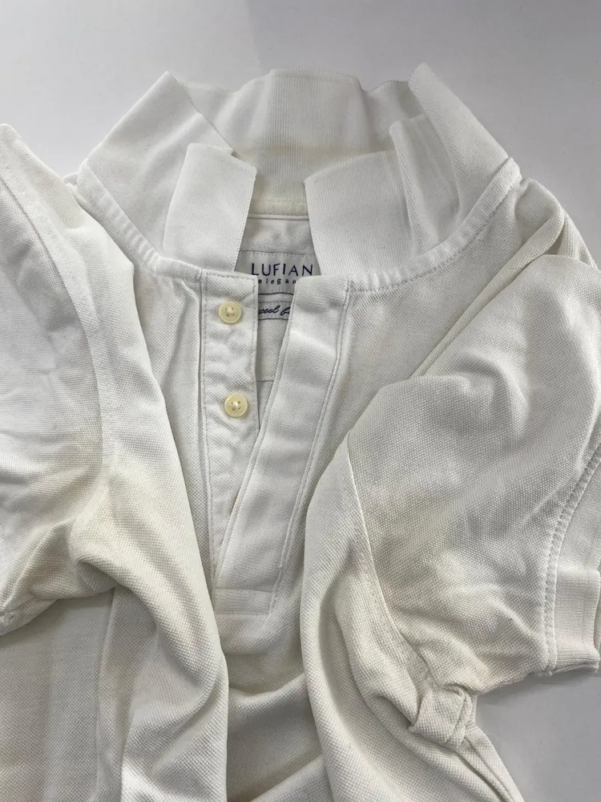

Mezitli'de Profesyonel Kuru Temizleme ve Terzi
Mersin Mezitli'de 10 yıllık güven. Kuru temizleme, terzi tadilatı ve ütü hizmetlerinde kalite standartlarını yeniden tanımlıyoruz.
Mezitli'de 10 Yıldır Güvenle Hizmetinizdeyiz
Beyoğlu Kuru Temizleme olarak, Mezitli'nin en güvenilir temizleme ve tadilat noktası olmaktan gurur duyuyoruz. İbrahim Bey ve uzman ekibimizle, her kumaş türüne özel hassas işlemler uyguluyor, kıyafetlerinizin ömrünü uzatıyoruz.
Sadece bir temizleme işlemi değil, kıyafetlerinize kaybettiği canlılığı geri kazandırmayı hedefliyoruz.
- Çevre dostu temizlik ürünleri
- Usta terzi işçiliği
- Profesyonel buharlı ütü

Tecrübe
Kuru Temizleme ve Terzi Hizmetlerimiz
Mersin Mezitli'de kaliteden ödün vermeden
Kuru Temizleme
Takım elbise, kaban ve hassas kumaşlar için leke çıkarma ve derinlemesine temizlik.
Detaylı bilgiTerzi & Tadilat
Paça kısaltma, daraltma, fermuar değişimi ve vücudunuza tam oturan profesyonel tadilatlar.
Detaylı bilgiProfesyonel Ütü
Endüstriyel buharlı ütülerle kusursuz görünüm. Gömlekleriniz ilk günkü gibi.
Detaylı bilgiGelinlik & Abiye
En özel günlerinizin kıyafetlerine, boncuk ve işlemelere zarar vermeden hassas bakım.
Detaylı bilgiYorgan & Battaniye
Büyük hacimli makinelerde, derinlemesine hijyen sağlayan özel yıkama programları.
Detaylı bilgiPerde & Tül
Ev tekstilleriniz için sararma karşıtı, parlaklık veren özel temizleme işlemi.
Detaylı bilgiTemizlik Öncesi ve Sonrası
Mezitli'deki atölyemizden gerçek sonuçlar
Atölyemizden Çalışmalar
Gelinlikten yorgana, kalitemizi yakından inceleyin







Müşteri Yorumları
Müşterilerimizin Memnuniyeti Bizim İçin Önemli
"Abimin nişanı vardı, takım elbisemi götürdüm; çok güzel tadilatını yaptılar. Güler yüzlü, nazik bir işletme."
"Mersin için büyük bir şans. İbrahim Bey gördüğüm en mükemmel esnaflardan. Gittiğiniz zaman işinin başarısı ve insanlığıyla karşılaşıyorsunuz. Çok teşekkür ederim, bol kazançlar."
"Abiye temizliği arayışında İbrahim Bey ile yollarımız kesişti. İş anlayışı, güler yüzü, temizlik ve tadilattaki titizliği ile çok memnun kaldım. Gönül rahatlığıyla tercih edebilirsiniz."
"Güler yüzlü hizmet ve kaliteli işçilik için teşekkür ederim, iyi ki tanımışım İbrahim Bey."
"Dürüst, güvenilir, özenli bir işletme. Yorganlar için burayı tercih ediyorum, tertemiz ve sorunsuz geliyor. Çevreme de tavsiye ediyorum. Teşekkürler."
"Çok nazik ve çok ilgililer. İşinde çok başarılılar, biz çok memnun kaldık. Teşekkür ederiz."
"Çok iyi ve titiz bir işletme. Hizmetten çok memnun kaldım. Google puanına bakıp seçmiştim, iyi ki seçmişim. Herkese tavsiye ederim."
"Ürün temizliğinden çok memnun kaldım. Teslimatta verilen detaylı bilgiler içimi rahatlattı. En hassas ürünlerde bile güvenle bırakıyorum."
"İşçilik, kalite, güler yüz. Takım elbisemi tadilat yaptırdım, çok başarılı. Kesinlikle tavsiye ederim."
"Terzi tadilat ve kuru temizleme işlerinde tavsiye üzerine tanıştığım İbrahim Bey ilgili, bilgili ve dürüst bir esnaf. Herkese tavsiye ederim."
"Takım elbisemi verdim, kısa sürede tertemiz teslim aldım. İlgisi için işletme sahibine teşekkür ederim."
"Çok memnun kaldım. Güzel işçilik ve güler yüzle karşılandım."
"Çok başarılı ve güzel işçilik. Tavsiye ederim."
"Güler yüzlü karşılama, kusursuz temizleme, tam zamanında teslim."
Sık Sorulan Sorular
Mezitli kuru temizleme ve terzi hizmetleri hakkında
Mersin'de kuru temizleme ne kadar sürer?
Standart temizlikler 24 saatte, acil işler aynı gün teslim edilir.
Mezitli'de gelinlik ve abiye temizliği yapıyor musunuz?
Evet. Hassas kumaşlara özel yöntemlerle iz bırakmadan temizlik ve koruma uyguluyoruz.
Yorgan ve battaniye temizliği nasıl yapılır?
Büyük tamburlu makineler ve antialerjik deterjanlarla yıkanır, düşük ısıda kurutulur.
Terzi tadilatlarında teslim süresi nedir?
Paça kısaltma ve basit tadilatlar aynı gün, detaylı işlemler 1-2 iş günü içinde teslim edilir.
Kuru temizleme fiyatlarınız ne kadar?
Fiyat; ürünün türüne, kumaşına ve yapılacak işleme göre değişir. Ürününüzün fotoğrafını WhatsApp'tan gönderirseniz hızlıca fiyat bilgisi veririz.
Çalışma saatleriniz nedir?
Pazartesi - Cumartesi 08:00 - 18:30 arası açığız. Pazar günleri kapalıyız.
Bize Ulaşın
Sorularınız veya fiyat bilgisi için bizimle iletişime geçebilirsiniz. Mezitli başta olmak üzere Mersin'in her yerinden müşterilerimizi bekliyoruz.
Adres
Yeni Mahalle 33175 Sokak Fullkart 2 Apartmanı Altı No:11/B
33200 Mezitli/Mersin
Telefon
Çalışma Saatleri
Pazartesi - Cumartesi: 08:00 - 18:30